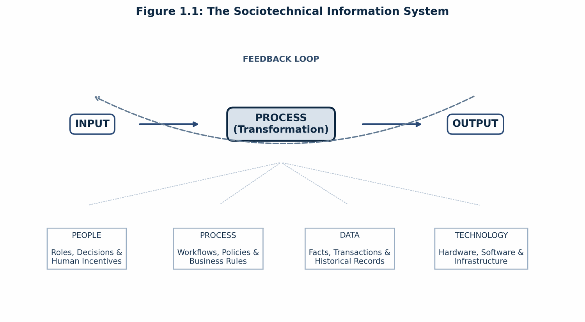
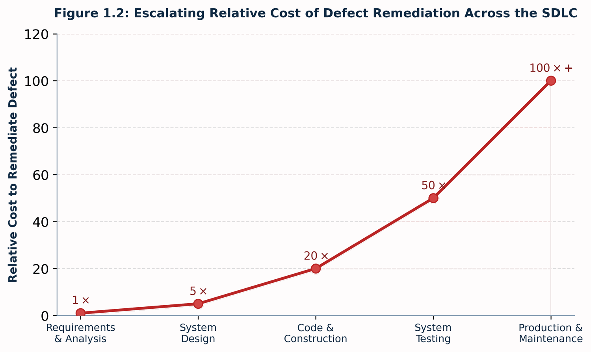
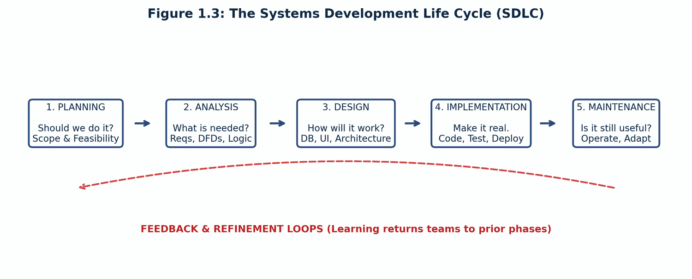
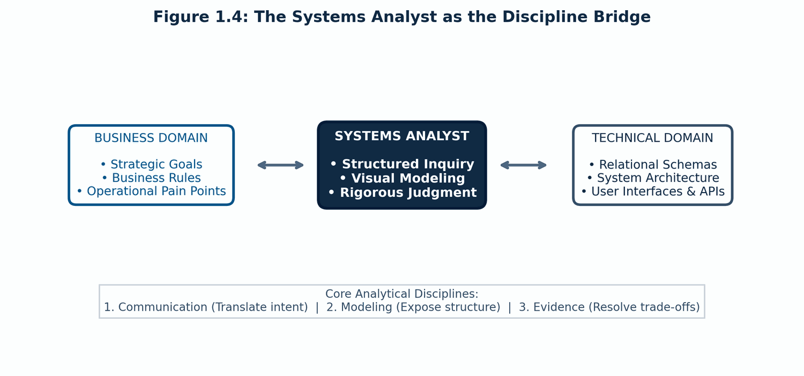

Information technology projects rarely fail because software engineers do not know how to write code. They fail because teams build the wrong system, solve the wrong problem, or misjudge the human and organizational environment in which the software must live.
Systems Analysis and Design (SAD) provides the discipline, modeling tools, and investigative rigor required to bridge the divide between human organizations and formal technical execution. This chapter introduces the foundational concepts: what constitutes an information system, the lifecycle that governs its development, the contrasting methodologies teams use to build software, and the central role played by the systems analyst.
By the end of this chapter you should be able to:
An information system (IS) is not merely software or hardware. It is an organized sociotechnical system combining four distinct pillars that accept inputs, execute transformations, and generate valuable outputs governed by feedback loops:

A failure in any one pillar compromises the whole. Implementing a scalable cloud registration portal (technology) will fail if academic advisors (people) bypass the system, course capacity override rules (process) remain contradictory, or prerequisite course histories (data) are corrupted.
The primary economic justification for rigorous systems analysis is the Cost of Change Curve. A vague requirement or misunderstood business rule is cheap to fix when it is just words on a whiteboard, but becomes exponentially more expensive as it progresses through the project lifecycle:

When an unverified assumption slips past the analysis phase, it forces rework across every subsequent layer: 1. At Need / Analysis (1x): Clarifying a registration hold policy requires modifying an interview note or updating a requirements statement. 2. At Design (5x): Re-architecting database schemas, updating data flow diagrams, and rewriting API contracts. 3. At Build (20x): Refactoring compiled code, re-architecting data models, and discarding obsolete development work. 4. At Test (50x): Writing new regression test suites, triaging defects, and resolving integration breaks across components. 5. At Production / Maintenance (100x+): Emergency hotfixes, data corruption cleanups during registration rush, student lockouts, negative publicity, and academic appeals.
The systems analyst’s leverage lies in exposing contradictions, challenging assumptions, and formalizing constraints before they freeze into software architecture.
The SDLC provides a disciplined, structured framework for shepherding an idea from initial business concept to long-term operational health:

The SDLC is not a linear promise that insight happens only once; it is a conceptual map. In practice, discovery at any stage triggers feedback loops that send teams back to refine earlier assumptions:
Courses in systems analysis and design spend the vast majority of their time in the Analysis and Design phases: * Discover: Stakeholder identification, requirement elicitation, structured interviews. * Model: Use case specifications, Data Flow Diagrams (DFDs), Entity-Relationship Diagrams (ERDs). * Design: User experience, relational database designs, system architecture. * Integrate: Ensuring end-to-end traceability across all models.
While all software development must resolve the core questions of the SDLC, teams organize the work differently depending on project risk, requirement stability, and organizational context:
| Dimension | Structured Development | Object-Oriented & Iterative | Agile Development |
|---|---|---|---|
| Primary Philosophy | Plan-driven; formal stage gates. | Model-centered; system viewed as interacting objects. | Feedback-driven; rapid, value-focused iteration. |
| Pacing / Cycle | Linear, sequential phases. | Cycles of discovery, refinement, and integration. | Short sprints (1–4 weeks); continuous delivery. |
| Requirements | Fixed upfront; formal change control. | Deepen and mature through iterative modeling. | Emergent; refined continuously via product backlog. |
| Best Fit | Stable requirements, regulated reporting, fixed vendor contracts. | Complex enterprise domains with rich entity behaviors. | Volatile environments, exploratory features, rapid feedback needs. |
| Primary Risk | Late learning makes changes costly and contentious. | Excessive modeling detached from tangible user value. | Lack of structural discipline devolving into chaotic hacking. |
Note on Terminology: Object-Oriented
describes how we model the system (identifying objects like
Student, Course, Section, and
their encapsulations). Iterative describes how we
cycle through the work (repeated loops of discovery and
refinement).
Real-world enterprise projects rarely follow textbook extremes; they blend elements into hybrid frameworks (e.g., plan-driven compliance governance coupled with agile user-interface prototyping).
The systems analyst is not merely a stenographer taking down meeting notes, nor a developer writing backend code. The analyst serves as an active translator and bridge between organizational problem spaces and technical solution architectures:

To function as an effective bridge, an analyst relies on three core competencies: 1. Communicate: Listening beyond literal statements to understand what stakeholders actually mean, uncovering hidden assumptions and unstated operational incentives. 2. Model: Translating ambiguous business realities into rigorous, visual specifications (use cases, process flows, data schemas) that make hidden complexity visible. 3. Judge: Resolving conflicting stakeholder requirements using evidence, system boundaries, and architectural trade-offs rather than political deference.
Different analysis artifacts answer fundamentally different questions about the target system:
| Artifact | Core Question Answered |
|---|---|
| Requirements Specifications | What must the system do, and what operational rules must be true? |
| Use Cases & Scenarios | What specific goals does the system accomplish on behalf of its actors? |
| Data Flow Diagrams (DFDs) | How does information move through the system, and where is it transformed? |
| Entity-Relationship Diagrams (ERDs) | How are the fundamental business data concepts structured and related? |
| UI Wireframes & Report Mockups | How will human users interact with the system and inspect operational results? |
| Traceability Matrices | Do all technical models align to verified business needs without gaps or gold-plating? |